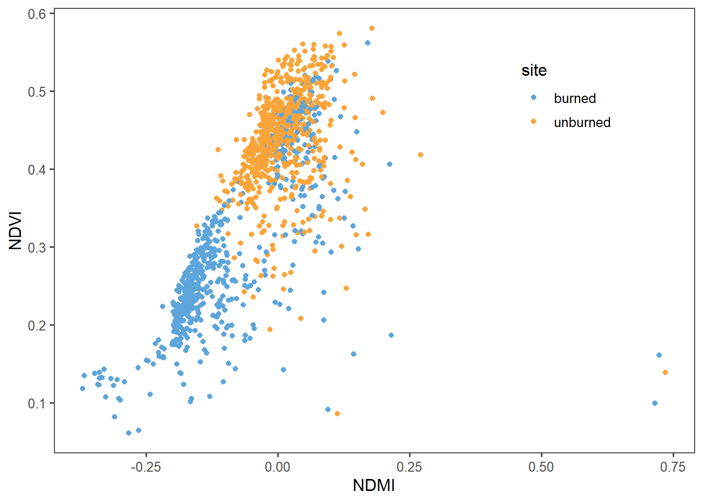
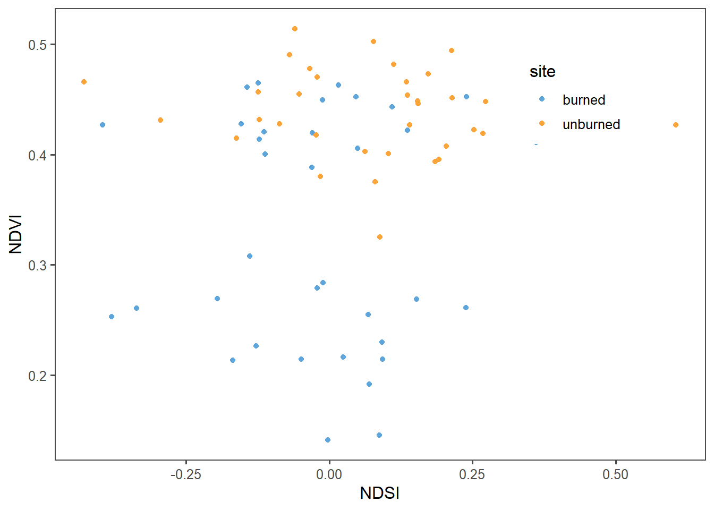
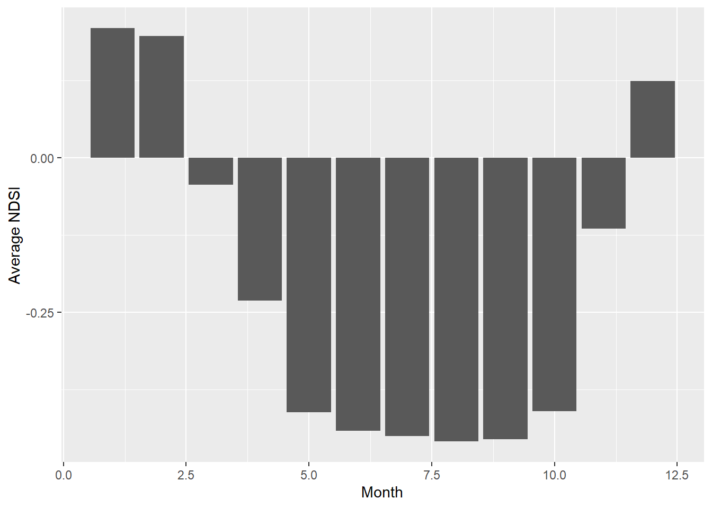

Chapter 3 Hayman Fire Recovery Assignment
3.1 Reading in Data and Stacking it
# Read in individual data files
ndmi <- read_csv("FinalProjectBookdown/data/assignment2/hayman_ndmi.csv") %>%
rename(burned=2,unburned=3) %>%
mutate(data='ndmi')
ndsi <- read_csv("FinalProjectBookdown/data/assignment2/hayman_ndsi.csv") %>%
rename(burned=2,unburned=3) %>%
mutate(data='ndsi')
ndvi <- read_csv("FinalProjectBookdown/data/assignment2/hayman_ndvi.csv")%>%
rename(burned=2,unburned=3) %>%
mutate(data='ndvi')
# Stack as a tidy dataset
full_long <- rbind(ndvi,ndmi,ndsi) %>%
gather(key='site',value='value',-DateTime,-data) %>%
filter(!is.na(value))3.2 Question 1
What is the correlation between NDVI and NDMI? - here I want you to convert the full_long dataset in to a wide dataset using the function “spread” and then make a plot that shows the correlation as a function of if the site was burned or not (x axis should be ndmi) You should exclude winter months and focus on summer months
There is a positive correlation between NDVI and NDMI with a value of 0.96. As moisture index increases so does vegetation index. In general, the plot indicates that for unburned sites the majority of them have high NDVI values as compared to the burned sites. For both types of sites, the plots indicate positive relationships.
# converting long data to wide
full_wide <- spread(data=full_long,key='data',value='value') %>%
filter_if(is.numeric,all_vars(!is.na(.))) %>%
mutate(month = month(DateTime),
year = year(DateTime))
#filter out winter months
summer_only <- filter(full_wide,month %in% c(6,7,8,9))
#plotting ndmi vs ndvi for summer months
ggplot(summer_only,aes(x=ndmi,y=ndvi,color=site)) +
geom_point() +
theme_few() +
scale_color_few() +
theme(legend.position=c(0.8,0.8)) +
labs(y="NDVI", x="NDMI")
cor(summer_only$ndmi, summer_only$ndvi)## [1] 0.69196663.3 Question 2
- What is the correlation between average NDSI (normalized snow index) for January - April and average NDVI for June-August? In other words, does the previous year’s snow cover influence vegetation growth for the following summer?
Based on the correlation value of 0.18 there is a positive relationship meaning the previous year’s snow cover does influence vegetation growth for the following summer. However, based on the low value it does not indicate a strong correlation between the two as compared to NDVI and NDMI in Question 1.
# summarizing the data by year
ndvi_annual <- full_wide[c("DateTime", "ndvi", "month", "year", "site")] %>%
filter(month %in% c(6,7,8)) %>%
group_by(site,year) %>%
summarize(ndvi_annual=mean(ndvi))
ndsi_annual <- full_wide[c("DateTime", "ndsi", "month", "year", "site")] %>%
filter(month %in% c(1,2,3,4)) %>%
group_by(site,year) %>%
summarize(ndsi_annual=mean(ndsi))
combined <- inner_join(ndsi_annual, ndvi_annual)
cor(combined$ndsi_annual, combined$ndvi_annual)## [1] 0.1803564ggplot(combined,aes(x=ndsi_annual,y=ndvi_annual,color=site)) +
geom_point() +
theme_few() +
scale_color_few() +
theme(legend.position=c(0.8,0.8)) +
labs(y="NDVI", x="NDSI")
3.4 Q3
How is the snow effect from question 2 different between pre- and post-burn and burned and unburned?
Pre-burned correlation: 0.091 Post-burned correlation:0.24 Burned sites correlation: 0.087 Unburned sites correlation: -0.031
There are positive correlations for NDVI and NDSI between pre- and post-burn dates and burned sites, and a negative correlation for unburned sites. Based on the correlation values and plots, the correlations are not noticeably strong.
#pre burned correlation
ndvi_pre <- full_wide[c("DateTime", "ndvi", "month", "year", "site")] %>%
filter(month %in% c(6,7,8)) %>%
filter(year %in% c(1984:2001)) %>%
group_by(site,year) %>%
summarize(ndvi_pre=mean(ndvi))
ndsi_pre <- full_wide[c("DateTime", "ndsi", "month", "year", "site")] %>%
filter(month %in% c(1,2,3,4)) %>%
filter(year %in% c(1984:2001)) %>%
group_by(site,year) %>%
summarize(ndsi_pre=mean(ndsi))
combined_pre <- inner_join(ndsi_pre, ndvi_pre)
cor(combined_pre$ndsi_pre, combined_pre$ndvi_pre)## [1] 0.09100615a <- ggplot(combined_pre,aes(x=ndsi_pre,y=ndvi_pre,color=site)) +
geom_point() +
theme_few() +
scale_color_few() +
theme(legend.position=c(0.8,0.8)) +
labs(y="NDVI", x="NDSI", title = "a. Pre-burn")#post burned correlation
ndvi_post <- full_wide[c("DateTime", "ndvi", "month", "year", "site")] %>%
filter(month %in% c(6,7,8)) %>%
filter(year %in% c(2003:2019)) %>%
group_by(site,year) %>%
summarize(ndvi_post=mean(ndvi))
ndsi_post <- full_wide[c("DateTime", "ndsi", "month", "year", "site")] %>%
filter(month %in% c(1,2,3,4)) %>%
filter(year %in% c(2003:2019)) %>%
group_by(site,year) %>%
summarize(ndsi_post=mean(ndsi))
combined_post <- inner_join(ndsi_post, ndvi_post)
cor(combined_post$ndsi_post, combined_post$ndvi_post)## [1] 0.24394b <- ggplot(combined_post,aes(x=ndsi_post,y=ndvi_post,color=site)) +
geom_point() +
theme_few() +
scale_color_few() +
theme(legend.position=c(0.8,0.8)) +
labs(y="NDVI", x="NDSI", title = "b. Post-burn")#burned sites correlation
ndvi_burn <- full_wide[c("DateTime", "ndvi", "month", "year", "site")] %>%
filter(month %in% c(6,7,8)) %>%
filter(site %in% "burned") %>%
group_by(year) %>%
summarize(ndvi_burn=mean(ndvi))
ndsi_burn <- full_wide[c("DateTime", "ndsi", "month", "year", "site")] %>%
filter(month %in% c(1,2,3,4)) %>%
filter(site %in% "burned") %>%
group_by(site,year) %>%
summarize(ndsi_burn=mean(ndsi))
combined_burned <- inner_join(ndsi_burn, ndvi_burn)
cor(combined_burned$ndsi_burn, combined_burned$ndvi_burn)## [1] 0.08700527c <- ggplot(combined_burned,aes(x=ndsi_burn,y=ndvi_burn)) +
geom_point() +
theme_few() +
scale_color_few() +
theme(legend.position=c(0.8,0.8)) +
labs(y="NDVI", x="NDSI", title = "c. Burned sites")#unburned sites correlation
ndvi_unburned <- full_wide[c("DateTime", "ndvi", "month", "year", "site")] %>%
filter(month %in% c(6,7,8)) %>%
filter(site %in% "unburned") %>%
group_by(year) %>%
summarize(ndvi_unburned=mean(ndvi))
ndsi_unburned <- full_wide[c("DateTime", "ndsi", "month", "year", "site")] %>%
filter(month %in% c(1,2,3,4)) %>%
filter(site %in% "unburned") %>%
group_by(site,year) %>%
summarize(ndsi_unburned=mean(ndsi))
combined_unburned <- inner_join(ndsi_unburned, ndvi_unburned)
cor(combined_unburned$ndsi_unburned, combined_unburned$ndvi_unburned)## [1] -0.03100231d <- ggplot(combined_unburned,aes(x=ndsi_unburned,y=ndvi_unburned)) +
geom_point() +
theme_few() +
scale_color_few() +
labs(y="NDVI", x="NDSI", title = "d. Unburned sites")
ggarrange(a,b,c,d, nrow = 2, ncol = 2)
3.5 Question 4
What month is the greenest month on average?
Based on the NDVI, the greenest month on average is August.
ndvi_mean <- full_wide[c("ndvi", "month")] %>%
group_by(month) %>%
summarize(ndvi_mean=mean(ndvi))
ggplot(ndvi_mean, aes(x=month,y=ndvi_mean))+
geom_bar(stat="identity")+
labs(y="Average NDVI", x= "Month")
3.6 Question 5
What month is the snowiest on average?
Based on NDSI, the snowiest month on average is January.
ndsi_mean <- full_wide[c("ndsi", "month")] %>%
group_by(month) %>%
summarize(ndsi_mean=mean(ndsi))
max(ndsi_mean$ndsi_mean)## [1] 0.2099584ggplot(ndsi_mean, aes(x=month,y=ndsi_mean))+
geom_bar(stat="identity") +
labs(y="Average NDSI", x= "Month")